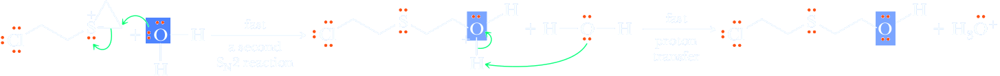

Neighboring group partecipation
So far, we have considered two limiting mechanisms for nucleophilic substitutions that focus on the degree of covalent bonding between the nucleophile and the substitution center during departure of the leaving group. In an SN2 mechanism, the leaving group is assisted in its departure by the nucleophile. In an SN1 mechanism, the leaving group is not assisted in this way. An essential criterion for distinguishing between these two pathways is the order of reaction. Nucleophile-assisted substitutions are second order: first order in RX and first order in nucleophile. Nucleophile-unassisted substitutions are first order: first order in RX and zero order in nucleophile. Chemists recognize that certain nucleophilic substitutions have the kinetic characteristics of first-order (SN1) substitution but, in fact, involve two successive displacement reactions. A characteristic feature of a great many of these reactions is the presence of an internal nucleophile, most commonly sulfur, nitrogen, or oxygen, on the carbon atom beta to the leaving group. This neighboring nucleophile participates in the departure of the leaving group to give an intermediate, which then reacts with an external nucleophile to complete the reaction. The mustard gases are one group of compounds that react by participation of a neighboring group. The characteristic structural feature of a mustard gas is a two-carbon chain, with a halogen on one carbon and a divalent sulfur or trivalent nitrogen on the other carbon (S-C-C-Lv or N-C-C-Lv).
An example of a mustard gas is bis(2-chloroethyl)sulfide ClCH2CH2SCH2CH2Cl, a poison gas used extensively in World War I and at one time, at least, manufactured by Iraq. This compound is a deadly vesicant (blistering agent) and quickly causes conjunctivitis and blindness.
ClCH2CH2SCH2CH2Cl
bis(2-Chloroethyl)sulfide
(a sulfur mustard gas)
(a nitrogen mustard gas)
Bis(2-chloroethyl)sulfide and bis(2 chloroethyl)methylamine are not gases at all. They are oily liquids with a high vapor pressure, hence the designation “gas.” Nitrogen and sulfur mustards react very rapidly with moisture in the air and in the mucous membranes of the eye, nose, and throat to produce HCl, which then burns and blisters these sensitive tissues. What is unusual about the reactivity of the mustard gases is that they react very rapidly with water, a very poor nucleophile.
| ClCH2CH2SCH2CH2Cl + 2H2O | ⟶ | HOCH2CH2SCH2CH2OH | + | 2HCl |
Mustard gases also react rapidly with other nucleophiles, such as those in biological molecules, which makes them particularly dangerous chemicals. Of the two steps in the mechanism of the hydrolysis of a sulfur mustard, the first is the slower and is rate-determining.
Mustard undergo nuclephilic substitution reactions through neighboring group participation. The eyes, respiratory tract, and mucous membranes are acutely suscptible to mustard gas because, in these moise environments, the initial reaction is hydrolysis to produce hydrochloric acid, which then burns and blisters these sensitive tissues.. However, mustard gas also induces longer-term damage to cells by reaction with proteins and DNA.
Step 1: Make a new bond between a nucleophile and an electrophile and simultaneously break a bond to give stable molecules or ions. The reason for the extremely rapid hydrolysis of the sulfur mustards is neighboring group participation by sulfur in the ionization of the carbon-chlorine bond to form a cyclic sulfonium ion. This is the rate-determining step of the reaction; although it is the slowest step, it is much faster than reaction of a typical primary chloroalkane with water. At this point, you should review halogenation of alkenes (Sections 6.3D and 6.3F) and compare the cyclic halonium ions formed there with the cyclic sulfonium ion formed here.
Step 2: Make a new bond between a nucleophile and an electrophile. The cyclic sulfonium ion contains a highly strained three-membered ring, and reacts rapidly with an external nucleophile to open the ring followed by proton transfer to H2O to give H3O+. In this SN2 reaction, H2O is the nucleophile and sulfur is the leaving group.
Of the two steps in the mechanism of the hydrolysis of a sulfur mustard, the first is the slower and is rate-determining. As a result, the rate of reaction is proportional to the concentration of the sulfur mustard but independent of the concentration of the external nucleophile. Thus, although this reaction has the kinetic characteristics of an SN1 reaction, it actually involves two successive SN2 displacement reactions.